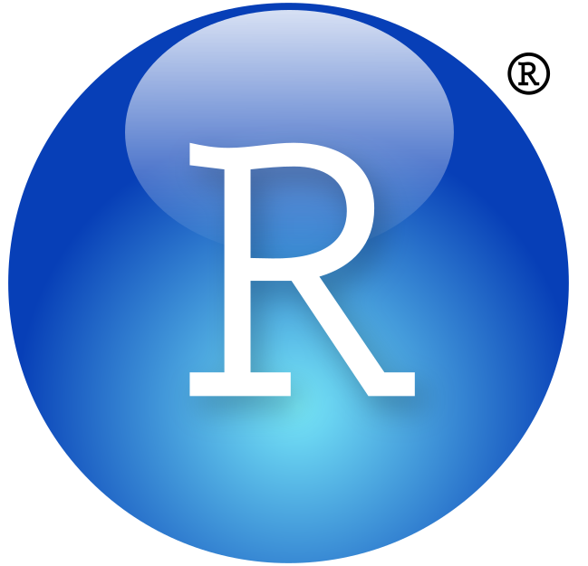
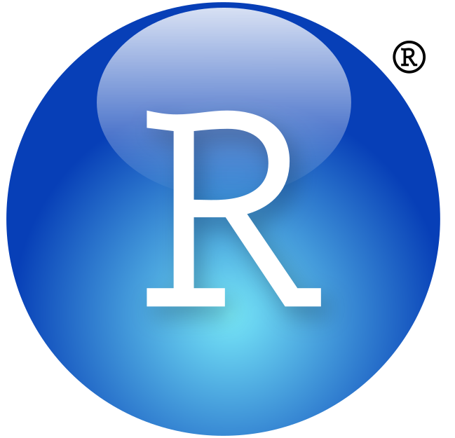
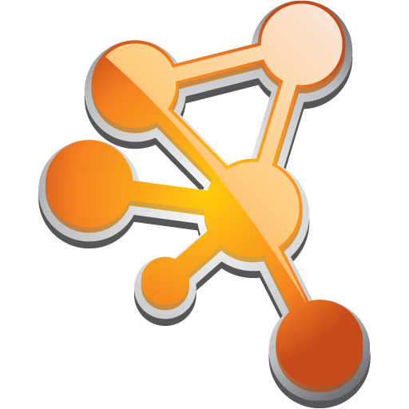
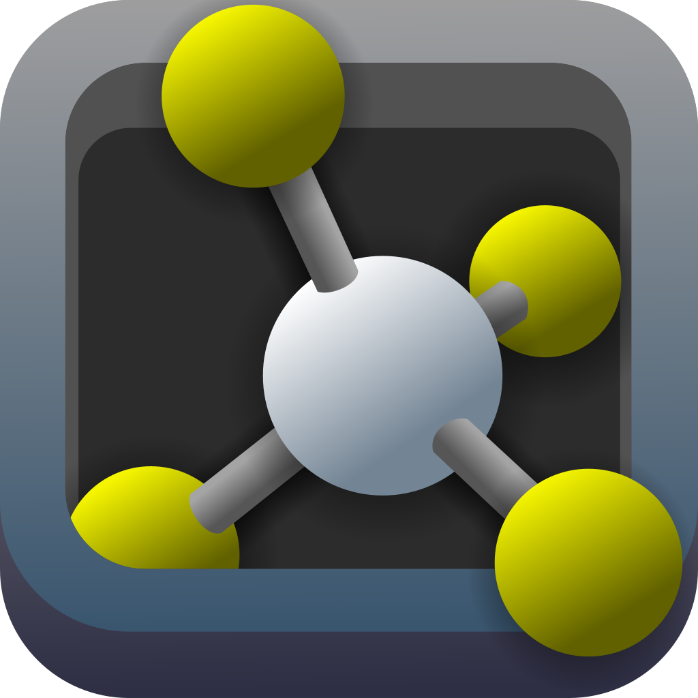
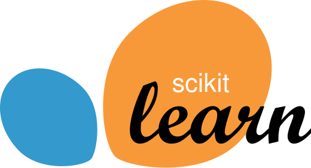
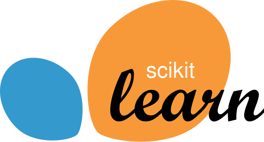

With a powerful blend of programming expertise and extensive wet lab experience in genomics and proteomics, I am uniquely positioned to bridge the gap between laboratory science and computational analysis. My postdoctoral journey, building upon a robust foundation from my Ph.D., has propelled me into emerging scientific areas, particularly machine learning. Over the past three years as a genomics postdoctoral fellow at the College of Computer Science and Engineering at the University of South Carolina, I have significantly enhanced my programming skills, enabling me to analyze high-throughput data in genomics, proteomics, and protein structure with exceptional precision.
This experience has equipped me with advanced skills tailored specifically for research in genomics data analysis, encompassing everything from sequence analysis to network construction. My expertise extends to handling gene expression and gene methylation data, as well as exploring protein structure and the interactions of macromolecules—all critical components in the development of vaccines and pharmaceutical therapies. This multidisciplinary approach allows me to contribute to cutting-edge advancements in medical science, making me an invaluable asset in the pursuit of innovative solutions for vaccine and drug development.

 
 

Proficiently scripting within text-based environments ND using R and Python—two of the most prominent programming languages in the field—has enabled me to delve into the cutting-edge realms of artificial intelligence and machine learning. My expertise extends to leveraging the extensive libraries available in these languages in ways that align with biological research. This includes understanding complex biological systems and conducting detailed network analyses of proteins and genes, as well as their interactions.
Utilizing powerful tools such as Cytoscape for network analysis, alongside structural utilities like PyMOL and VMD, I am developing a comprehensive package that bridges the gap between biology and computational analysis. This package, which will soon be enhanced with GROMACS, underscores my commitment to integrating advanced computational techniques with biological research, driving forward innovative solutions in the field.
  
In this rapidly evolving field, I have led five machine learning projects, starting with decision trees in Scikit-learn and advancing to sophisticated neural networks using PyTorch. My multidisciplinary approach, combining advanced programming, machine learning, and a deep understanding of biological systems, makes me an ideal candidate for driving innovations in vaccine and drug discovery. I am committed to pushing the boundaries of science and technology to contribute meaningfully to the development of life-saving medical advancements.
 

Primer Design
With a deep understanding of PCR lab techniques and real-world sample analysis, paired with advanced programming skills, I can assist in designing custom assays and conducting phylogenetic analysis. My expertise allows me to support the creation of innovative products, services, and experiences that unlock new growth platforms and deliver significant business value.
Sequencing Data Analysis and Phylogeny
My extensive wet lab experience in sequencing has provided me with a profound understanding of sequencing data. When combined with my programming expertise, I am well-equipped to handle any type of sequencing data, perform precise alignments, conduct rigorous quality control checks, and prepare the data for advanced analysis. This unique skill set allows me to seamlessly integrate raw data into meaningful insights, driving research and innovation forward.
Gene Expression Data Analysis
My extensive wet lab experience in sequencing has given me a deep understanding of sequencing data. Combined with my programming skills, I am well-equipped to delve into any type of sequencing data, perform alignments, and conduct thorough quality control checks and prepare them for furthur advance.
Computational Structural Biology
Understanding the intricate structures of biomolecules, such as proteins, nucleic acids, and their complexes, requires the power of programming languages to unravel the complexities hidden within macromolecules. Leveraging state-of-the-art computational techniques, I have developed an all-in-one pipeline that covers every stage, from gene and construct design to the final determination of molecular structures. My extensive background in structural biology, encompassing techniques such as X-ray crystallography and NMR spectroscopy, allows me to support and enhance research efforts in this field. Over the years, I have enriched my experience by solving the structures of various protein targets, contributing valuable insights into their function and interactions.
Cytoscape and Network Analysis
Network analysis has become an essential approach for tackling complex, large-scale datasets in bioinformatics. Cytoscape, a widely used open-source software platform, is specifically designed for visualizing molecular interaction networks and biological pathways. This powerful tool not only allows for the visualization of intricate networks but also supports the integration of diverse data types, including annotations, gene expression profiles, and other state data. By providing a comprehensive view of biological systems, Cytoscape enhances our ability to understand and analyze the complexities of molecular interactions and their implications in various biological contexts.